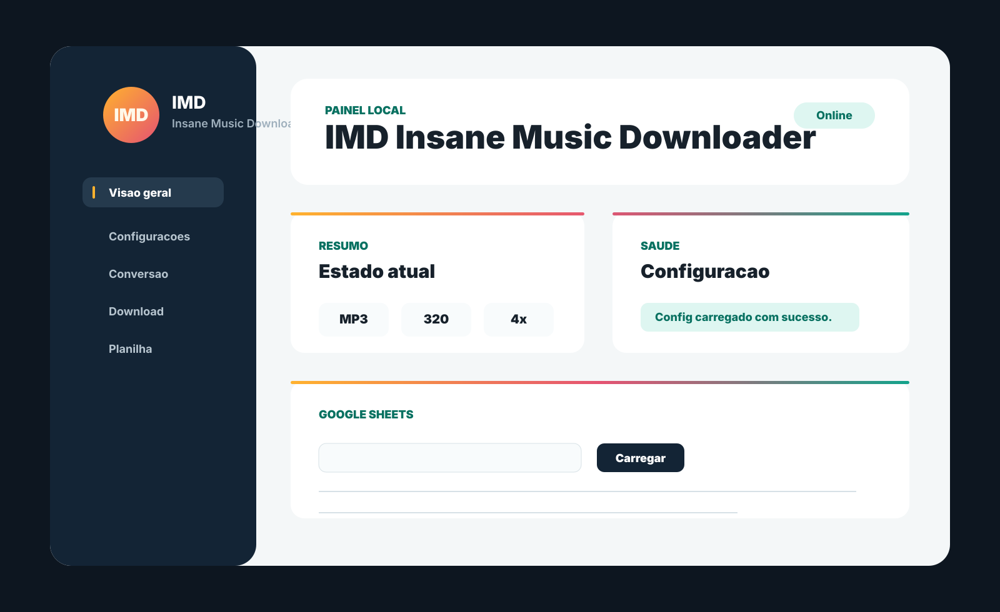

Planilhas e listas
Carregue Google Sheets, TXT, CSV ou XLSX e veja tudo antes de iniciar o download.

Painel local para Windows
Baixe, converta, revise e organize musicas com uma interface simples no navegador, sem precisar mexer em terminal.
Instala por usuario, configura suas pastas e abre o painel local automaticamente.
Tudo no painel
Carregue Google Sheets, TXT, CSV ou XLSX e veja tudo antes de iniciar o download.
Rode downloads com reescan, modo teste, logs em tempo real e fila em background.
Converta M4A, MP4, FLAC, WAV, OGG, OPUS e AAC para MP3 ou outros formatos.
Depois de baixar, o IMD pode preencher informacoes das faixas automaticamente.
Instalacao
O instalador recomendado e o Setup.exe. Ele inclui o aplicativo, dependencias principais e telas simples para escolher a pasta de musicas, a pasta de estado e a URL CSV da sua planilha do Google.
Manual
Use este roteiro se o Windows mostrar aviso de seguranca ou se for a primeira instalacao do IMD.
Clique em Baixar Setup.exe nesta pagina. O arquivo deve aparecer na pasta Downloads.
Clique com o botao direito no Setup.exe, escolha Propriedades, marque Desbloquear e clique em Aplicar.
Duas vezes clique no arquivo. Se aparecer o SmartScreen, clique em Mais informacoes e depois em Executar assim mesmo.
Na tela de instalacao, mantenha a pasta de musicas sugerida ou selecione outra. Faca o mesmo para a pasta de estado.
Cole a URL CSV do Google Sheets. Se ainda nao tiver o link, deixe o valor sugerido e configure depois no painel.
No final, deixe marcado Abrir o IMD agora. O painel abre no navegador em 127.0.0.1:8765.
https://docs.google.com/spreadsheets/d/ID_DA_PLANILHA/export?format=csv&gid=0.Download
Para uso normal, baixe o Setup.exe. O MSI continua disponivel para instalacao tecnica ou automatizada.
Sempre baixa os instaladores mais recentes publicados no GitHub Releases.
Perguntas
Nao. Ele abre uma pagina local em 127.0.0.1, dentro do seu computador.
Baixe o Setup.exe. Ele tem assistente de instalacao e configuracao inicial.
Nao. O instalador foi pensado para levar o app pronto para usar.
Sim. O painel tem configuracoes basicas e avancadas em uma tela propria.
Use apenas com conteudos e direitos que voce pode acessar, baixar ou converter.